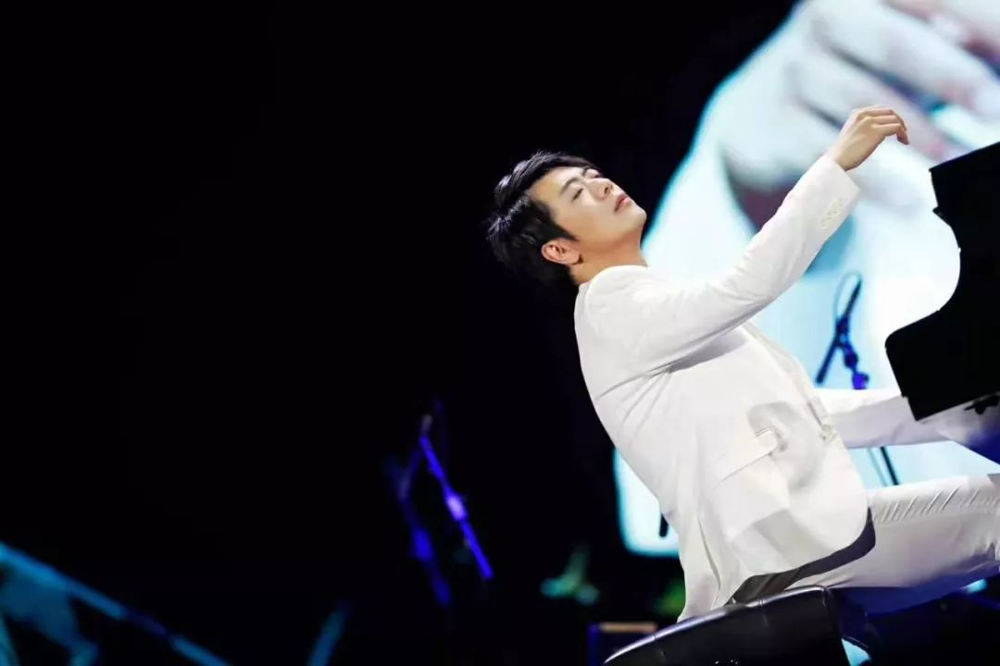
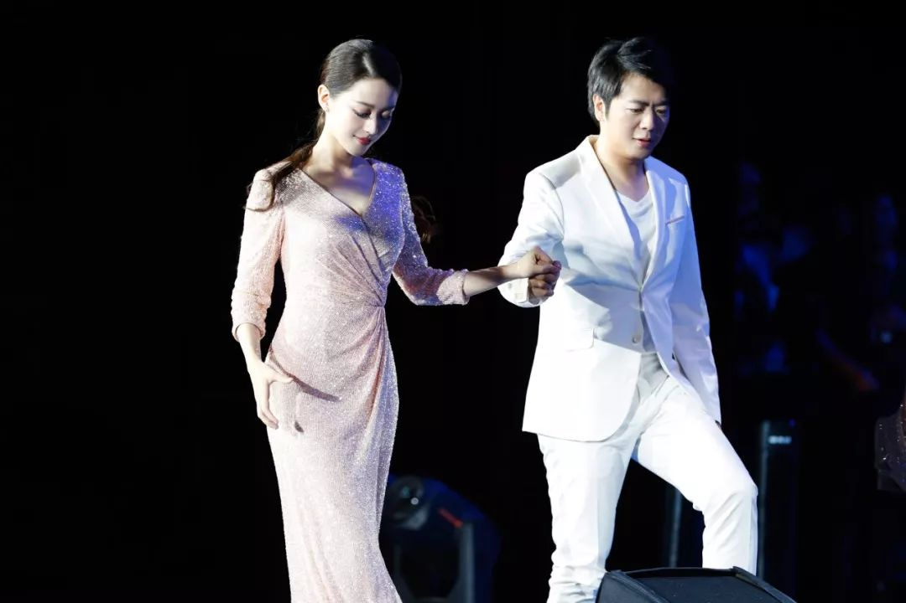

朗朗
个人简介
郎朗（Lang
Lang），1982年6月14日出生于辽宁省沈阳市沈河区，中国男钢琴演奏者，联合国和平使者，毕业于美国柯蒂斯音乐学院。
重要事件
-
1999年8月，参加美国芝加哥“拉维尼亚音乐节”世纪庆典明星音乐会，作为替补登台演奏。
- 2001年，在人民大会堂进行100周年百年庆典巡演。
- 2002年，获得伯恩斯坦艺术成就大奖。
- 2003年，推出个人钢琴演奏专辑《柴可夫斯基/门德尔松协奏曲名录》。
- 2005年，在白宫举行个人专场独奏会。
- 2006年，推出个人钢琴演奏专辑《黄河之子》。
- 2008年，获得美国录音师协会颁发的“艺术荣誉奖”。
- 2010年，获得国际门德尔松大奖，成为首位获得该奖项的中国人。
- 2011年，举行了“弗朗茨·李斯特诞辰200周年郎朗现场音乐会” 。
-
2013年，参加维也纳音乐厅100周年音乐季；同年10月28日，在纽约联合国总部，联合国秘书长潘基文向郎朗授予了“联合国和平使者”称号。
-
2019年6月2日，郎朗晒出九张婚纱照，宣布已与德韩混血女钢琴演奏者吉娜·爱丽丝结婚，并在法国凡尔赛宫举办婚礼晚宴
参演的综艺节目
- 2011年1月1日《快乐大本营》跨年特别节目嘉宾
-
2015年1月2日《天天向上》2015开年大来宾并担纲嘉宾主持
2016年3月25日《我是歌手(第四季)》加盟助阵李克勤演绎《我不会唱歌》
2016年7月3日《加油！向未来》
-
2016年9月9日《中国新歌声(第一季)》那英组内PK淘汰赛五强争夺战助阵导师
-
2017年9月9日《快乐大本营》与陈学冬合作带来《迷迭香》并担任游戏评委
- 2017年12月24日《吐槽大会》第二季第3期主咖
- 2019年3月10日《天天向上》郎朗魏晨组队挑战浏阳特产
- 2019年10月17日《幸福三重奏2》与妻子吉娜·爱丽丝共同参与
-
2020年5月8日《王牌对王牌5》与妻子吉娜·爱丽丝共同参与
参演纪录片
| 年份 |
名称 |
| 2005 |
成为钢琴演奏家 |
| 2006 |
寻找莫扎特 |
| 2007 |
黄河之子 |
| 2007 |
音连音:制造施坦威L1037 |
| 2009 |
我为钢琴狂 |
| 2011 |
音乐大师之路 |
| 2011 |
郎朗的歌：献给2008 |
| 2012 |
肖邦拯救人生 |
| 2012 |
一个璀璨少年的梦想 |
| 2012 |
破釜沉舟：郎朗的故事 |
| 2015 |
独一无二的郎朗 |
人物照片

